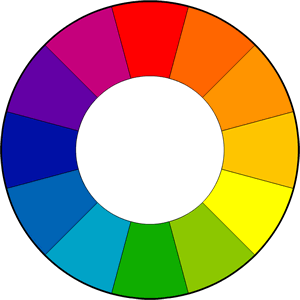

hsl(0, 20%, 50%)
hsl(120, 100%, 80%)
hsl(240, 100%, 50%)
HSL (Hue, Saturation, Lightness) - цветовая модель, в которой цветовыми координатами является тон, насыщености и яркости. HSL - Википедия
Для того, чтобы задать цвет этим способом вы должны указать:

- Оттенок цвета указывается в градусах поворота цветового круга (0 градусов - красный, 120 градусов - зеленый, 240 градусов - голубой и тд.);
- Насыщенность цвета указывается в процентах (по мере понижения процентов цвета будет блекнуть);
- яркость цвета также указывается в процентах (0% - темный, 100% - светлый).